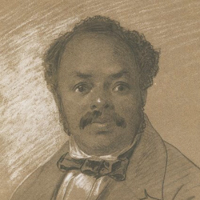

During Winter 2014, University of Michigan Professor Anita Gonzalez, working with a team of undergraduate and graduate students from History, Information, Art and Design, and Theatre, spent a semester designing and building a prototype web-based, interactive tool. The goal was to create a visually interesting and interactive screen that tracks the life, travels, performances, cultural context and repertory of the 19th century actor Ira Aldridge.
The display includes geo-spatial mapping of Aldridge’s journeys, images of historical documents,
network schemata, and video recordings of gestures that document 19th century acts. Team members Clara McClenon,
Katy Robinson, Amana Kaskazi, and Allyson Mackay collaborated with students and staff in developing this digital humanities project that emphasizes visual interfaces.
The project points to wider issues of documenting under-represented performance histories in digital formats.
In an age of prolific visual and audio imagery how are we to capture the performance dynamism of the 19th Century?
Our methodology included organizing and training the computer-programming team while collaborating with a theatre
class on reconstructing play excerpts and finally, integrating the collaborative work through team meetings.
Anita Gonzalez Project Lead |
Clara McClenon Project Manager & Designer |
Katy Robinson Researcher and Historian |
Allyson Mackay Web Developer |
Ira Aldridge 19th Century Performer |
Amana Kazkazi Web Developer |
Justin Joque Geospatial Mapping Consultant |
Nicole Scholtz Geospatial Mapping Consultant |
John R. Diehl Technical Consultant |
This project was funded through a University of Michigan Provost Third Century Initiative Quick Wins grant. Administrative and educational support was provided by the Clark Libary as part of MLibrary.